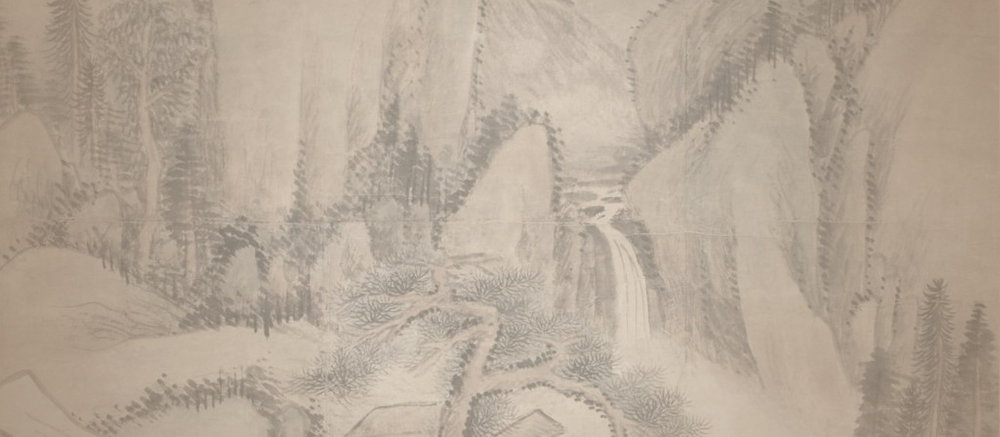
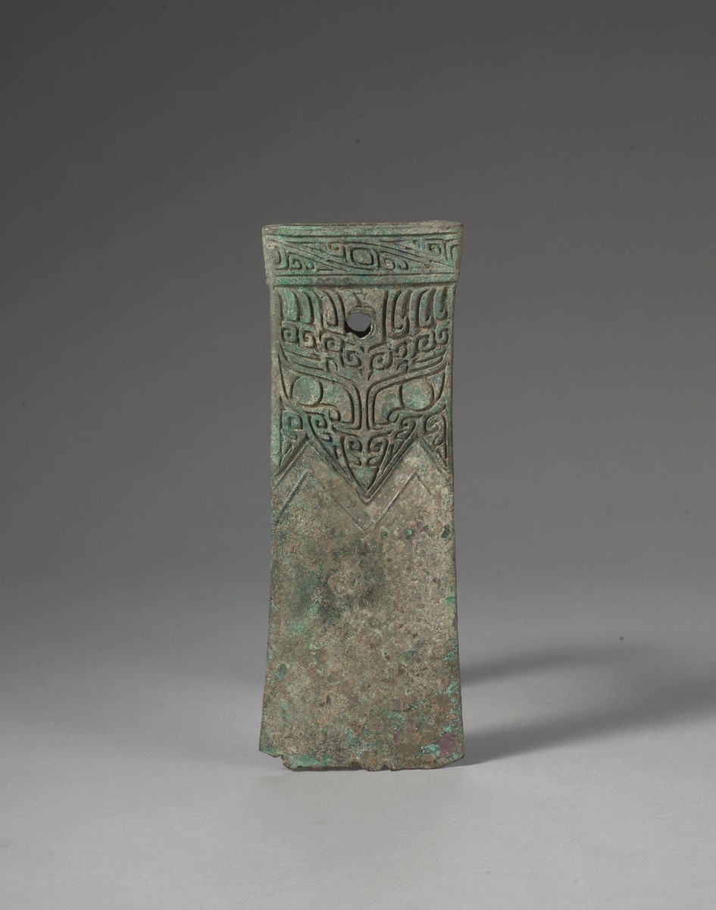

01 实时监控

● 在线
展厅实时画面
接入 ESP32-CAM 实时画面，呈现展厅巡检状态、网络连接情况与今日录像数据。
设备状态：正常连接状态：良好
先看系统概况，再点击对应模块按钮平滑定位到下方具体展示区。

接入 ESP32-CAM 实时画面，呈现展厅巡检状态、网络连接情况与今日录像数据。
动态展示前方障碍物、扫描角度与楼层环境信息，可用于小车导览避障场景展示。
以清晰的参观动线组织讲解内容，用户点击按钮即可跳转到下方对应模块，形成完整浏览逻辑。
首页主入口固定为青铜器、书画、陶瓷器、玉石器；点击分类后切换到下方对应专题内容。

器身饰兽面纹与夔龙纹，造型庄重，是礼乐文明的重要见证。
模块化呈现监控画面、接入状态与当前巡检展位，作为三大系统模块中的第一部分。
等待视频流信号，连接成功后画面将实时显示在此处。
该区域保留了后续接入真实雷达数据的空间，目前通过前端模拟动画完成可视化展示。
以展区动线为核心，将摄像头视角、雷达避障与文物讲解串联为完整导览流程。
序厅 → 青铜器 → 书画 → 陶瓷器 → 玉石器 → 尾厅。将鼠标移至任意站点，可高亮当前导览节点。
参观起点，用于了解山东大学博物馆智慧导览与安防巡检平台的整体功能。
点击文物详情中的“加入导览路线”，这里会显示已加入的展品。
摄像头模块连接成功，实时监控画面等待刷新。
导览路线运行中，当前节点可随路线模块切换。
检测到前方障碍物，系统建议低速巡检。
负责文博风界面设计、分类联动、交互效果与网页整体展示。
ESP32-CAM 上传视频帧，Node.js 服务端转发，网页端展示实时画面。
ESP32 控制舵机与超声波模块，完成扫描测距与网页雷达图联动。
组织四类馆藏、讲解文案、展厅动线与系统日志展示。